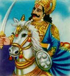

Forget about nuclear weapons, forget about tanks. One guy riding a horse may be all it takes to kill everyone on the planet. Kalki, is the soldier's name. And his only weapon is his sword of holy vengeance.
But to restore good, evil has got to pay. Suddenly, the man on the horse draws a sword. And off he goes, `fast like a comet'. Zoom!
Everywhere he rides, he brings about death and destruction. Did you `dress like a king'? Chop, there goes your head. Did you `commit sin in mind, speech and actions'? Slash, you're dead. Did you lie, did you eat the meat of a cow, were you a member of a sect? Stab, you're history.
It's a little while later, and the swordsman takes a break and looks back on a hard day's work. The earth is soaked in blood. Billions have died. Only a few truly good men have survived the ordeal.
But the guy on the white horse isn't done yet. He takes out some kind of supernatural lighter, and sets the place on fire. Crops burn, cities smolder. Within moments, the entire planet is on fire. And it goes well beyond that. The planets, the stars, yes, the entire Universe burns up.
Well, the man who brings it about isn't an average guy. An avenger from heaven he is; the tenth and final incarnation of Vishnu, Hindu god for all matters concerning creation and destruction. Kalki, is the incarnation's name. And he has come by to make the Universe a better place.
So he does. Once our reality is burnt to shingles, Kalki simply creates a new one. The Universe is reborn, the stars are reborn, and yes, the Earth is reborn too. A new, purified mankind reincarnates on the New Earth. People will be awakened, and `pellucid as crystal'. Kalki has led the cosmos into a new, everlasting state of being: the Age of Purity.
Now don't say you didn't see it coming. The signs that something was about to happen were jotted down many centuries ago in ancient Hindu writings, the Puranas. According to the Puranas, we currently live in the Age of Kali: a dark, evil cycle of time in which humanity and religion are corrupted and degraded. And Kalki is here to put an end to these evil days.
The omens outlined in the Puranas indeed look familiar. In the Kali Age, the Puranas say, world leaders will be liars, people will be full of anger and without religion, simple men will be rulers, and men will live according to the customs of others. There will be many sects and many `experts' claiming to know everything. The planet will be valued only as a resource for minerals. Money and expensive clothes will be all-important. People will marry solely for pleasure. The world will be governed by `powerful men with severe faults' who oppress the poor and support the wealthy.
As the coming of Kalki draws near, there will be even more of this. Also, there will be numerous famines, droughts, diseases, wars and other calamities. `People become poorer in vigor and luster. They are wicked, full of anger, sinful, false and avaricious,' the Puranas foresee.
So it's about time Kalki and his swift sword went on judgment tour, right? Oh, come on. Get serious. You don't REALLY believe we are about to be chopped up by this Kalki guy, do you?
For example: another apocalyptic `omen' outlined in the Puranas states that men living at the end of the Kali Age don't get older than 23 and that the poor will dress in clothes made out of tree bark and leaves. And this is definitely not happening -- or at least, not yet.
Kalki, the guy who likes the elite
Like all apocalyptic writings in religion, the Kalki episode of Hinduism is there for a very down to earth, social-historic reason. Actually, it has to do with power. The Kalki myth is seen as a means to maintain the Hindu caste system, and the rule of the supreme Brahmin caste in particular. That's why the Puranas state over and over again that in the `evil age' of Kali many ordinary people become rulers -- and how wicked that is.
The Hindu apocalyptic clearly is a pro-Brahmin chunk of religion: Kalki, himself a Brahmin, will slash every non-Brahmin who dared to become a ruler with top priority. As one scholar summarized the story: `Kalki is about to come to cleanse the world of those who are not the slaves of Brahmins.'
So think of Kalki as, well, the Boogie Man of Hinduism. If you disobey the rules of the Hindu social order, chop-chop -- you're dead.
Still, the Kalki scenario has deeply influenced a lot of faithful believers. The Baha'i faith for example claims its founding father Baha'u'llah is actually Kalki -- although Baha'u'llah clearly never went on Vengeance Tour and certainly didn't set the Universe on fire.
Likewise, the Sai Baba movement holds Sai Baba for Kalki. The `Foundation for World Awakening' claims Kalki is alive and kicking somewhere in South India. The Bagwan Movement has found its Kalki in their leader Vijayakumar. And still others believe the preacher Sri Padmavathi Devi in fact is Kalki. No doubt the real Kalki would know how to take care of such semi-saviors and their followers.
In recent days, there have been at least three big `Kalki scares' among Hindus. In 1962, the alignment of the eight visible planets of the solar system was taken for a heavenly token, marking the coming of Kalki. Well, it wasn't.
In 1984, Hindus held their breath again, because the Puranas seemed to suggest 1984 was Kalki time. And in 2000, Christian millennium fears spread to India, as many devoted Hindus prayed for Kalki to please pass their doors. And so he did, he didn't show up.
What `Kalki day' will be up next? No one knows. As good predictions do, the Puranas are exceedingly vague about the date Kalki is due to arrive. It will happen `when corruption is beyond every measure of control, necessitating the end of the world.' So that could be any time, really. Better keep your suit of armor on for a while.
 |
 |